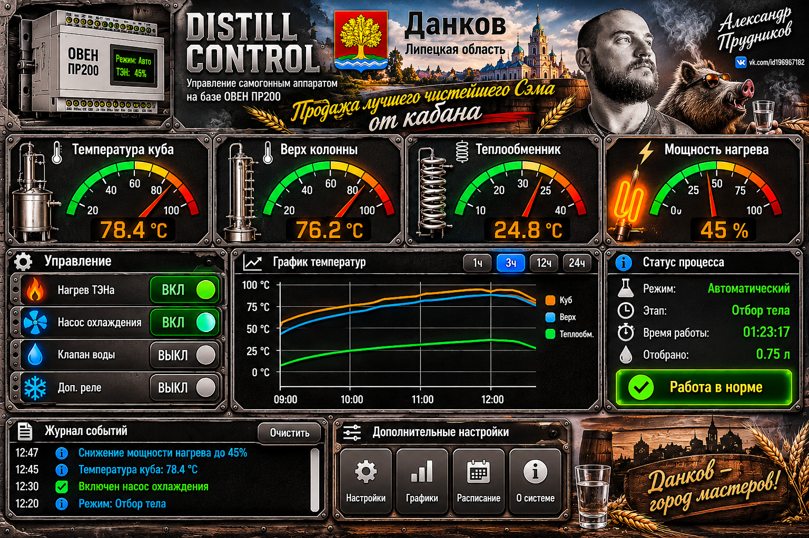

ДЕМО-РЕЖИМ. Показания и переключатели демонстрационные. Связь с ОВЕН ПР200 не настроена. Не используйте эту страницу для реального управления нагревом.
Температура куба
78.4 °C
Верх колонны
76.2 °C
Теплообменник
24.8 °C
Мощность нагрева
45 %
⚙ Управление (демо)
🔥 Нагрев ТЭНа
❄ Насос охлаждения
💧 Клапан воды
Дополнительное реле
⌁ График температур
Оранжевый — куб · Голубой — колонна · Зелёный — теплообменникⓘ Статус процесса
Режим Демо
Этап Не подключено
Время 00:00:00
Связь с ПР200 Нет связи
● Макет интерфейса загружен
▤ Журнал событий
12:47 — Макет открыт в демо-режиме
12:45 — Связь с контроллером не настроена
12:30 — Значения датчиков условные
⚙ Дополнительные настройки
Для подключения нужны точное исполнение ПР200, способ связи и карта входов/выходов.
Аварийное отключение и защита от перегрева должны работать независимо от веб-страницы.